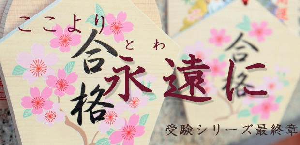

このブログを書いているのは3月5日夕刻です。
いよいよ明日（6日）は、県立後期の入試合格発表です。
1月の私立受験から始まった長い長い入試の日々も、ついに最終日を迎えることになりました。
そこで1日早いけれど、受験した皆さんにねぎらいの言葉を贈りたいと思います。
県立を受けた皆さんは、第一希望を一貫して目指し最後の最後まで頑張り続けたわけです。素直に敬意を表したいと思います。
そして「合格」の二文字に輝いた諸君には心から祝福の言葉を贈ります。
良かったね。オメデとう！
そして惜しくも不合格だった諸君には次の言葉を。
人生には名誉挽回のチャンスが何度もある！
さらにつけ加えるなら
人生に失敗はない。あるとしたら自分がそれを失敗と認めたときだけである！
何度も言いますが、どんなに惨めに思える「失敗」も人生という大きな流れ、大きな全体から見るとかけがえのない経験の一つであることが分かります。
このことは人生を長くやっていると誰でも了解できることです。
今日の失敗（に見えること）が明日の成功につながる。ごく普通にあることです。
私はむしろ「大きな成功は始めは失敗という形をとってやって来る」と常に言い続けています。
その時初めてドミノ倒しのようにそれまでの失敗が反転し、今の成功へと続く道しるべであったと気づく。
そんな経験を何度もしているのです。
「失敗」など単なるレッテルです。そんなレッテルを貼る必要などどこにあるのでしょう。
受験が終わったばかりでそんな風に考える余裕はないかも知れません。
それでも私の言葉を心の片隅にでも置いておいてください。
きっと気づく日が来ると思います。
さて、高校受験は終了しました。受験生の皆さん、保護者の皆さんお疲れ様でした。
今はゆっくり休んでください。
…と言いたいところですが、受験生の皆さんはここでホッとして気を抜かないでください。
すぐに新しい環境のもと次の学びが始まります。
学校の勉強のことだけではありません。
目にするもの耳に聞くものすべてに好奇心を持ってください。体験するものは全て学びです。中学までのときのように、やらされる勉強ではなく主体的に学び取る姿勢を持ってください。
高校生になったらこの「学び体質」を身につけて欲しいのです。机上の勉強だけでなく、社会的関心を広げ何に対しても好奇の思いを持って吸収し、それを自分の生き方にすぐ生かす姿勢です。
学びは一生続きます。
学生時代だけ勉強し社会人になったらパッタリと勉強しなくなる人がいます。そういう人の前途は明るいものではありません。
どこに行こうと常に学び続けていく者だけが勝利者なのです。
学び続ける者は人生の質を高め、幸福を得るからです。
学びは永遠です。今（ここ）から始めましょう。
Good Luck！
※蛇足ですが今日のタイトル「ここより永遠に」は古いハリウッド映画です。興味のある方は調べて下さい。
※蛇足ついでにもう一つ。今月の22日に県立高校入試の実態や高校選びについてお話します。我々の持っている情報を全て公開し、楽しく交流できるものにしたいと考えています。皆さまのお越しをお待ちしております。
3月22日開催「2015年度公立高校入試はこうだった」の見どころをARCS3人衆が語ります！